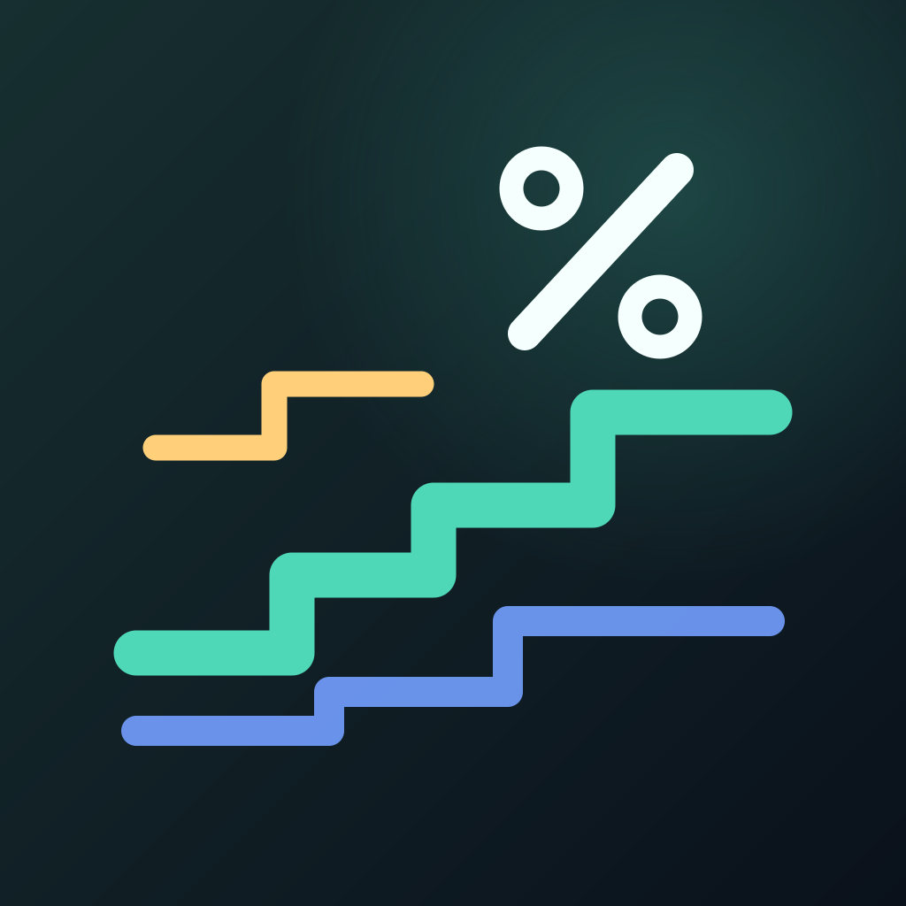

한눈에 금리
금리의 흐름과 공식 공시를 한 화면에서.
독립 iOS 앱의 App Store 공개 출시를 준비 중입니다.
한국·미국·일본 정책금리의 공식 적용일과 흐름을 한눈에 확인하세요. 한국은행 기준금리, 미국 연방기금금리 목표범위, 일본의 단기 정책금리를 같은 차트에서 비교하고 공식 적용일을 확인할 수 있습니다.
정책금리를 읽는 방법
미국은 목표 하한·상한을 범위로 구분합니다. 일본은 2024년 3월 정책체계 전환 이후의 유도목표를 제공하며, 종전 정책잔액금리와 연결하지 않습니다. 국가별 정책금리는 개인에게 적용되는 예금·대출 계약 금리와 다릅니다.
최신 자료와 적용일
화면의 자료 확인일과 실제 정책금리 적용일은 서로 다릅니다. 최신 공개 자료를 조회하지 못하면 앱에 포함된 검증 자료를 유지합니다. 정책금리의 미래 변경을 예측하거나 개인별 이자·수익을 보장하지 않습니다.
도움이 필요할 때
운영 및 문의: Factory iOS 앱 운영자
snowman95tube@gmail.com
앱 버전, iOS 버전, 발생 화면과 재현 순서를 알려 주세요. 자료 오류는 표시된 출처와 적용일을 함께 알려 주시면 확인하겠습니다. 문의에는 비밀번호·인증번호·주민등록번호·계좌번호 등 민감한 정보를 포함하지 마세요.
광고와 권한
독립 iOS 버전은 하단 배너 광고를 사용합니다. 추적 권한과 광고 개인정보 선택은 구분하며, 광고 처리와 변경 방법은 개인정보 안내에서 확인할 수 있습니다. 광고 표시 여부는 네트워크와 광고 제공 상황에 따라 달라질 수 있습니다.
앱 안내 링크
공유할 때 사용할 공개 앱 안내 주소입니다.
https://snowman95.github.io/factory-ios-site/interest/index.html